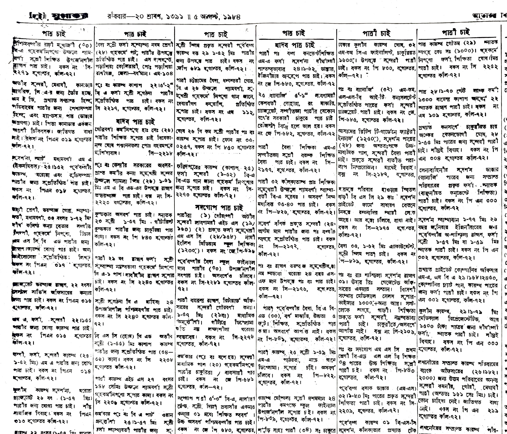
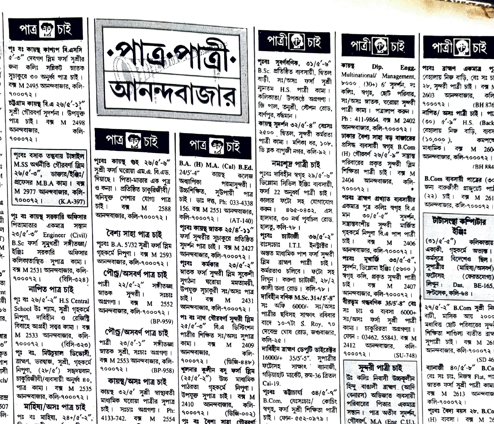
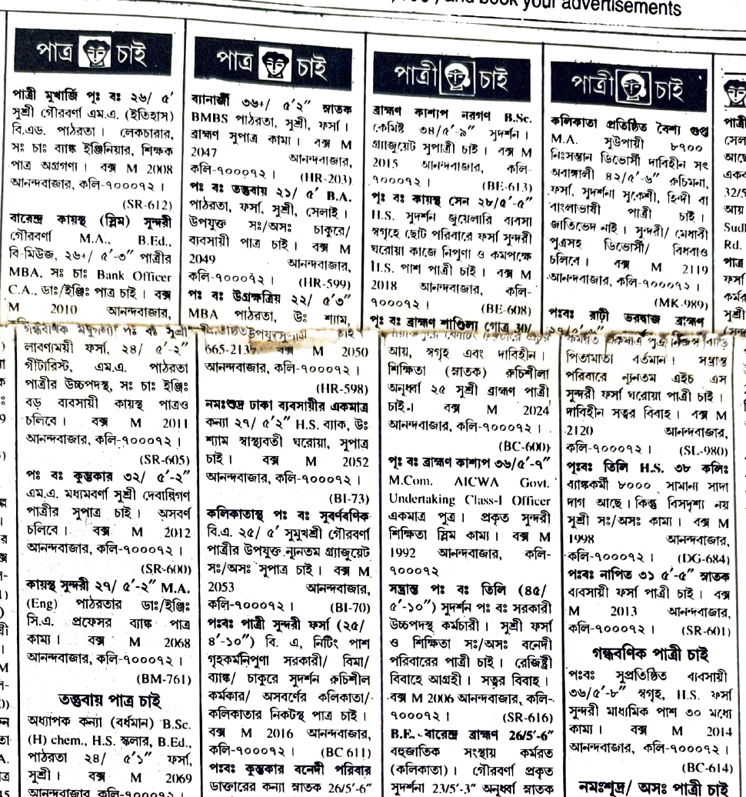
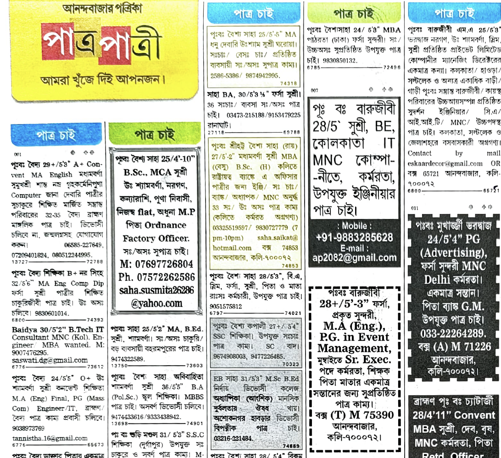

01 — Why this corpus exists
Four print eras, one column
The matrimonial column is one of the longest-running, most formally constrained genres in South Asian print classifieds. Its layout has quietly mutated across four decades of typesetting technology — while the underlying task, fitting a life story into the smallest billable space, has not. Scrub through the eras below.


1984 — Dense-packing era. Hand-set hot-metal columns, hairline rules, near-zero whitespace between listings. Ink-bleed and paper aging are common; bounding boxes must be drawn within a 2px tolerance to avoid merging adjacent ads.


1998 — Early phototypesetting. Column counts increase as desktop publishing tools enter newsrooms. Headers remain visually near-identical to Bride listings — the ambiguity that motivates BANDHAN's language-aware refinement.


2010 — Standardized grid. Digital typesetting introduces consistent gutters and grid-aligned columns. Aspect ratios stabilize for headers, while individual ad blocks remain budget-driven and highly variable.


2024 — Digital hybrid layout. Rounded card-like ad blocks, variable typography, and design flourishes appear alongside legacy column conventions — a hybrid of newsprint habit and web-influenced design.